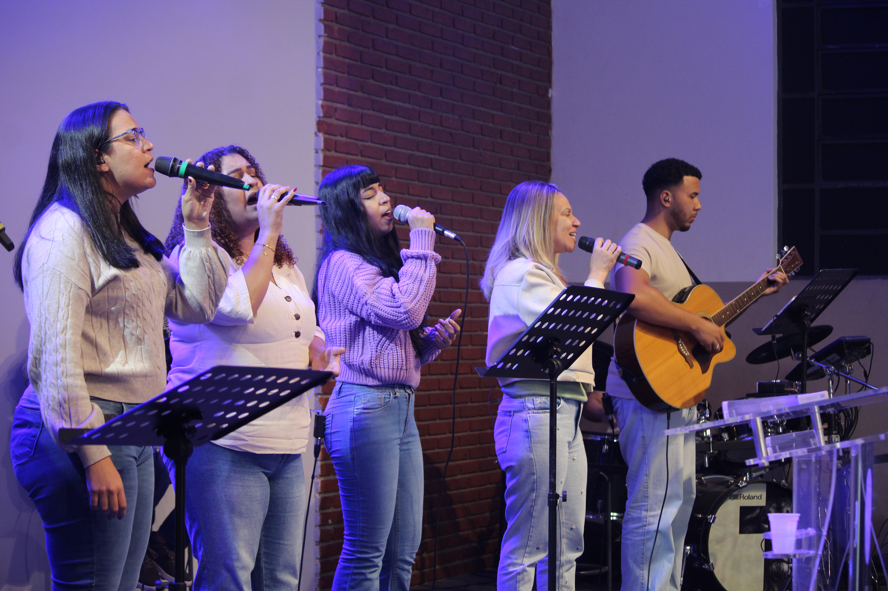
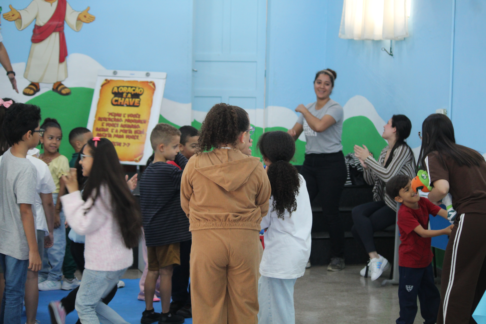
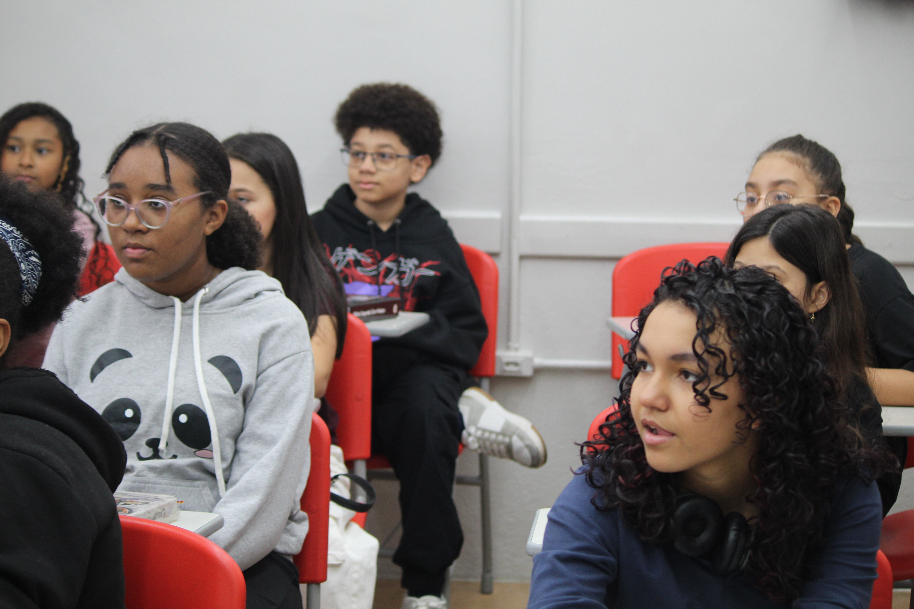
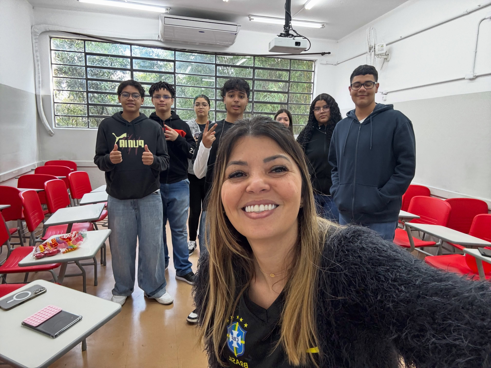
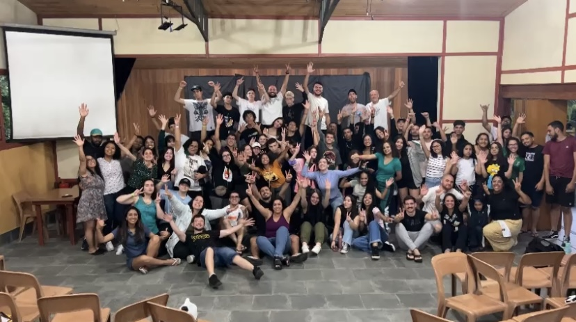
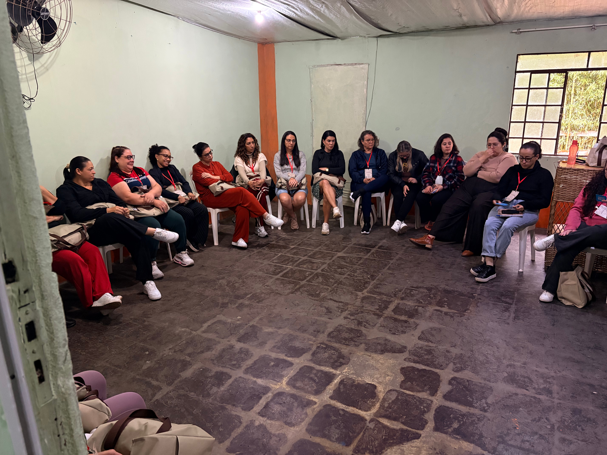
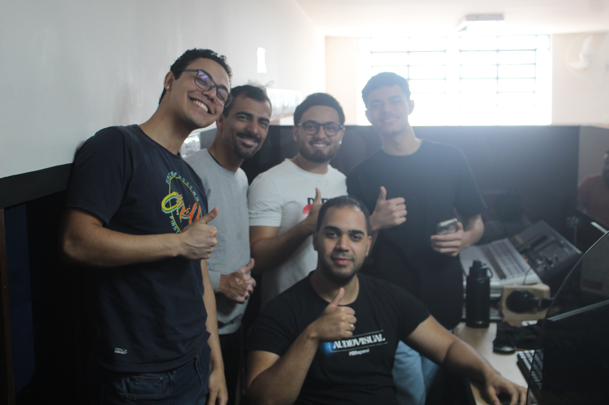

Ministérios

Louvor
Ministério responsável pelo louvor e pela música durante os cultos.

PIBI Criança
Ministério voltado para as crianças.

GAMA
Ministério voltado para os pré-adolescentes.

NEWAY
Ministério voltado para os adolescentes.

Jovens
Ministério voltado para os jovens.

Casais
Ministério voltado para os casais.

MSI
Ministério de Mídia, Som e Iluminação.